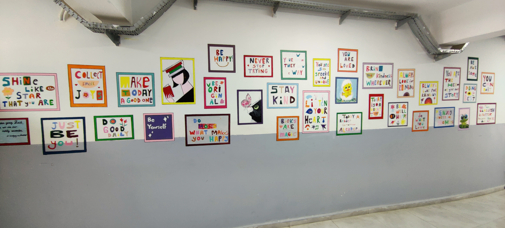

Motivationstafeln
Wir haben die Wände unserer Schule nicht nur aus Ziegeln und Farbe bestehen lassen, sondern sie für unsere Schüler in inspirierende Lebensräume verwandelt. Unsere im Rahmen unserer Vision "Färbe die Zukunft" (Geleceği Renklendir) ins Leben gerufenen Motivationstafeln schaffen in den Fluren der Naip Hüseyin Anadolu Lisesi eine völlig neue Energie.
💡 Warum Motivationstafeln?
Die Gymnasialzeit ist eine kritische Zeit, in der sich akademische Verantwortung, Prüfungsstress und Zukunftspläne verdichten. Die Bildungsreise kann manchmal anstrengend sein. Wir glauben daran, dass ein Satz, eine Farbe oder ein Bild, dem unsere Schüler begegnen, wenn sie morgens die Schule betreten oder in den Pausen durch die Flure gehen, ihren Tag erhellen kann. Unser Ziel ist es, die innere Motivation durch äußere Reize zu unterstützen.
🎯 Was beinhalten unsere Tafeln?
Unsere Tafeln, die in gemeinsamer Arbeit von Lehrern und Schülern erstellt wurden, haben eine dynamische Struktur, die ständig aktualisiert wird:
- Inspirierende Worte: Horizont erweiternde Zitate von Persönlichkeiten, die in der Welt der Wissenschaft, Kunst, Literatur und des Sports Spuren hinterlassen haben.
- Positive Psychologie: Kleine Tipps zu Themen wie dem Aufbau von Selbstvertrauen, Stressbewältigung und Zeitmanagement.
- Schülererfolge: Eine Ehrentafel unserer Schüler, die akademische, sportliche oder künstlerische Erfolge erzielt haben.
- Zielerinnerungen: Starke Botschaften, die dazu raten, auf dem Weg zur Universitätsaufnahmeprüfung (YKS) nicht aufzugeben, und die den Arbeitseifer anfachen.
🌈 Die Kraft von Farben und Design
Die Farbpalette auf unseren Tafeln wurde nicht zufällig ausgewählt. Gelb, das Optimismus repräsentiert, Blau, das Ruhe und Fokus bietet, Rosa, das die Energie steigert, und Lilatöne, die die Kreativität anregen, wurden zusammengebracht. Diese Designs bieten nicht nur etwas zum Lesen, sondern auch ein visuelles Fest und unterstützen die Lernprozesse unserer Schüler, indem sie positive Botschaften an ihr Unterbewusstsein senden.
Kurz gesagt, diese Tafeln flüstern unseren Schülern jeden Tag leise, aber kraftvoll zu: "Du schaffst das, wir glauben an dich und wir sind hier!"